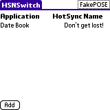

HSNSwitch can be used to change your HotSync name on the fly. I got a new Palm and made it my primary PDA. It inherited the old HotSync name so that I could continue using most of the software I use without a change. I also decided that my old Palm (a Tungsten T) was going to be a replacement for my Gameboy (yes - the original b/w one :-) So I had to find a way to move the games registered for primary Palm to the game-device.
Enter HSNSwitch. Basically, HSNSwitch can change the HotSync name on the fly - that is, before a program/game is launched the name is changed and after the application exits the name is reset.
HSNSwitch (currently) runs on PalmOS 5.x (and 5.x only!).
HSNSwitch is released under the GNU General Public License v2.
You can support this project by donating any amount to my Pay Pal account.
HSNSwitch has been tested on the following hardware:
It may work on your hardware as well. If not, please run HSNDetect. If HSNSwitch runs succesfully on your hardware I'd really like to know about it so that I can update the above list.
v1.5 (2005-09-22) Changed versioning from 1rX to 1.X. HSNSwitch can now also set HotSync ID for application launched from card. v1r4 (2005-04-27) Fixed a minor bug in v1r3 where the HotSync name came out wrong. On the 'Available Applications' form you can enter a letter and the list will scroll to that letter (Requested by Colin Quek). v1r3 (2005-04-27) Application names can now be changed so that the '*' left by PowerRun can be deleted (Requested by Colin Quek). v1r2 (2005-04-26) Added support for the Tungsten E and GSM Treo 650 devices. v1r1 (2005-04-17) First release of HSNSwitch.